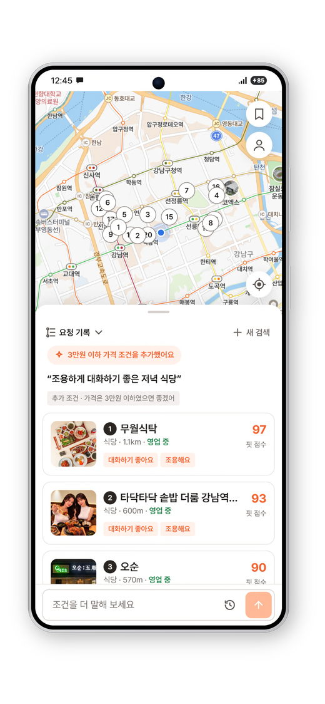
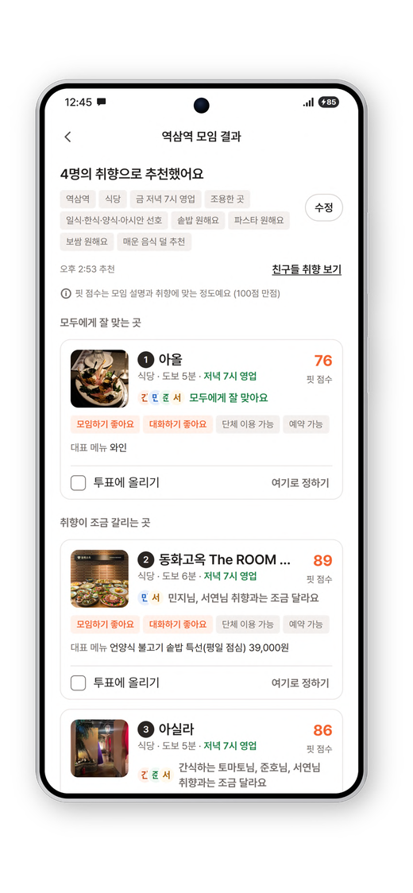
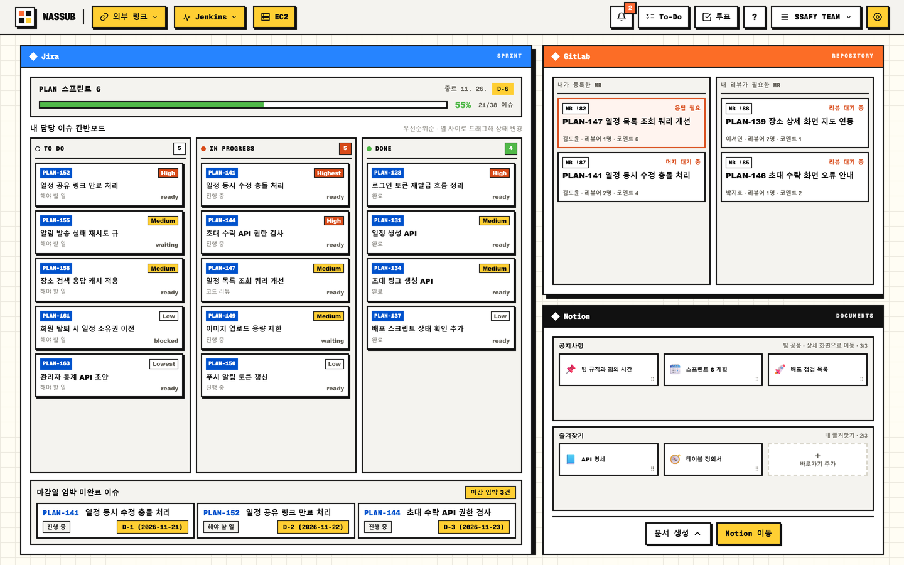
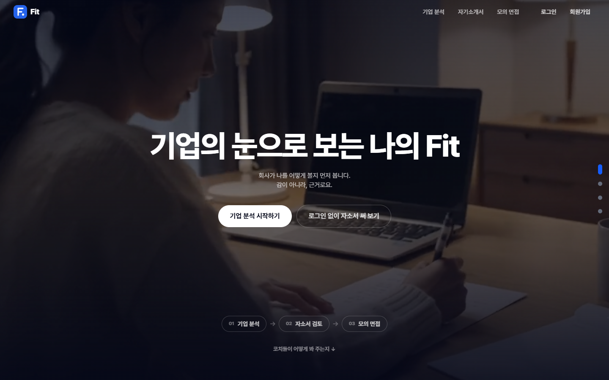
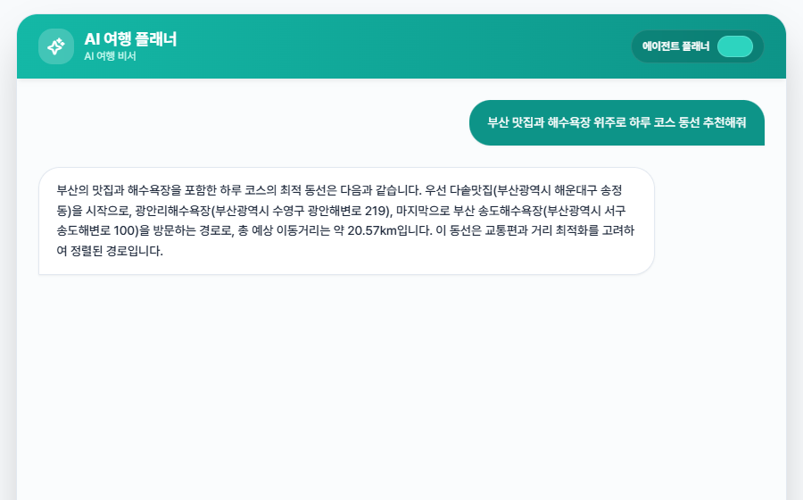
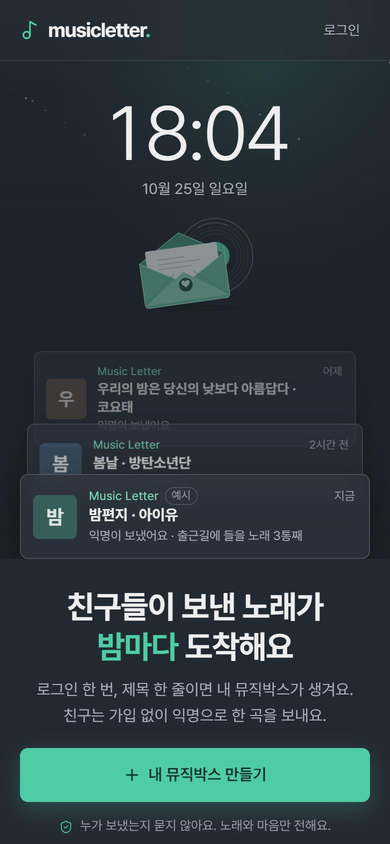
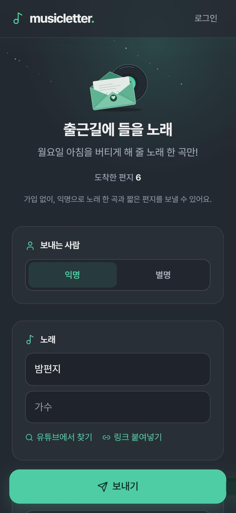

백엔드프론트엔드데이터베이스인프라AI


원하는 장소를 문장으로 검색하면 취향에 맞는 곳을 이유와 함께 추천하고, 친구들의 취향을 모아 모임 장소를 정하는 서비스
외부 저장소가 느려지면 다른 API까지 커넥션을 기다리던 문제
→저장소 호출을 트랜잭션 밖으로 분리
읽기 전용 트랜잭션에서 권한과 현재 사진 목록 조회
트랜잭션 밖에서 새 사진 복사, 크기와 형식 검증
짧은 트랜잭션에서 행 잠금 후 목록이 조회 때와 같으면 반영
커밋 후 트랜잭션 밖에서 제외된 사진과 임시 파일 삭제
DB 커넥션 점유 구간
트랜잭션 내 저장소 호출 6회 → 0회
측정 조건: 동일 환경에서 개선 전후 버전 비교, 커넥션 풀 10. 점유 시간은 단독 요청 10회의 중앙값, 목록 지표는 사진 수정 20명과 목록 조회 20명의 60초 부하 테스트
| 환경 | 로컬 PC의 Docker. PostgreSQL 16, Redis 7.4, S3 호환 저장소 Garage |
|---|---|
| 서버 설정 | Java 21, Spring Boot, 힙 900MB, 커넥션 풀 10 |
| 부하 도구 | k6 |
| 데이터 | 가명 처리한 서비스 DB 덤프를 별도 DB에 복원 |
| 비교 대상 | 해당 커밋 하나만 다른 두 버전 |
| 반복 | 단독 요청은 10회의 중앙값, 동시 부하는 1회 |

Jira, GitLab, Notion 등 여러 도구에 흩어진 팀의 작업 정보를 한 화면에 모으는 대시보드
팀 인원만큼 늘어나던 Jira API 호출
→팀 공용 Jira 데이터에 공유 캐시 적용
캐시 조회 전에 권한부터 검증
캐시 히트 시 Redis에서 즉시 응답
락을 획득한 1건만 Jira 호출
Jira 변경을 웹훅으로 수신
팀 공용, 팀원별 위젯 캐시 삭제
화면에 재조회 알림 전송
Jira API 호출 구간
남은 31회는 대부분 사용자별 위젯인 '내 작업' 조회
측정 조건: 개선 전은 캐시 미적용 설계 기준. 호출 수는 팀 6명이 5분간 사용, 동시 요청은 Jira 응답이 2초 이하일 때, 반영 시간은 팀 6명 기준 8회 측정
| 환경 | 단일 PC의 Docker |
|---|---|
| 외부 API | 응답 지연 300ms의 Jira 스텁 서버, WireMock |
| 비교 대상 | 캐시 미적용 설계와 현재 구조 |
| 조건 | 팀 6명, 워밍업 60초 후 5분 측정 |
공공데이터 API로 농축수산물 도매가격을 조회하는 서비스
조회할 때마다 공공데이터 API를 불러 느려지던 응답
→데이터 갱신 주기에 맞춰 캐시와 사전 수집 적용
Spring Batch로 매일 04:00에 55개 조합의 가격을 수집해 MySQL에 저장
Redis 캐시를 먼저 조회, TTL 5분
캐시 미스 시 MySQL에서 조회
공공데이터 API 호출 구간
측정 조건: 외부 API 응답을 350ms로 고정한 동일 환경에서 세 구조 비교, 사용자 50명이 55개 시장과 품목 조합을 60초간 조회
| 환경 | 로컬 PC |
|---|---|
| 외부 API | 응답을 350ms로 고정 |
| 부하 | 사용자 50명, 워밍업 15초 후 60초 측정, 2회 반복 |
| 비교 대상 | 조회마다 호출, Redis 캐시, 사전 수집과 캐시 세 구조를 각각 빌드 |

취업준비생이 기업 분석, 자기소개서 검토, 모의 면접을 한곳에서 하는 웹 서비스
분할 인식에서 바뀌던 급여 항목과 조각 수만큼 늘던 인식 시간
→인식 오류 수정과 조각 병렬 처리
분할 지점 주변 150px에서 글자가 없는 가로줄 탐색
글자가 없는 줄에서 분할, 이미지당 최대 6조각
조각을 동시에 VLM으로 인식
입력 순서대로 병합
변경한 단계
측정 조건: 개발 중 측정. 6조각을 순차 처리한 경우와 동시에 처리한 경우 비교, 배포 설정의 동시 처리 수는 4

여행 계획을 문장으로 요청하면 AI 에이전트가 관광지 검색, 경로 최적화 도구를 호출해 답하는 서비스
모델이 정한 인자로 다른 회원 정보까지 조회될 수 있던 구조
→조회 대상을 서버에서 로그인한 본인으로 결정
요청과 실행 이력을 보고 다음에 실행할 도구를 선택
결과가 충분하면 최종 답변 작성
회원 정보 도구는 인자 없이 SecurityContext의 로그인 사용자만 조회
관광지 조회와 경로 거리 계산은 도구 코드가 수행
도구 호출 반복은 최대 5단계
모델이 값을 정할 수 없는 단계
AI 활용 역량 경진대회의 예선 과제. 가상 온라인몰의 고객 문의를 메신저로 받아 조회, 접수, 이관 API를 호출하며 규정대로 처리하는 에이전트
코드만으로는 맞는지 알 수 없던 메신저 응대
→실제 메신저 테스트로 오류 4건 발견과 수정
공개 시나리오를 실제 메신저로 전송
서버 로그의 도구 호출과 답변을 기대 결과와 대조
실패 원인을 응대 규칙과 코드에 반영
같은 시나리오를 다시 전송
테스트 범위: 공개 시나리오 중 일부를 테스트, 최종 모델로 확인한 것은 4건. 판정은 서버 로그의 도구 호출 기록 기준


SNS에 걸어 둔 내 링크로 누구나 로그인 없이 노래 한 곡과 100자 편지를 익명으로 보내는 웹 서비스
배포할 때마다 수십 초씩 멈추던 서비스
→블루그린 배포 도입과 컨테이너 전환
새 버전 컨테이너를 대기 슬롯에 기동
새 슬롯의 상태 확인
Nginx 업스트림 교체 후 reload
전환 확인 후 이전 슬롯 정지
확인 범위: 쓰기 중단 시간은 전환 스크립트 측정값. 슬롯 전환 순간의 요청 끊김은 측정하지 않음